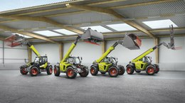

| Traktorok: | Kombájnok: | Silózók: |
|---|---|---|
|
A Traktork igen megbízhatóak kevest fogyasztanak és lóerőben terjedelmesek. A kisgzdák és a nagy válalat mind egyaránt meg |
A Kombájnok igen megbízhatóak kevest fogyasztanak és lóerőben terjedelmesek. A kisgzdák és a nagy válalat mind egyaránt meg |
A Sillózók igen megbízhatóak kevest fogyasztanak és lóerőben terjedelmesek. A kisgzdák és a nagy válalat mind egyaránt meg |
A link csak a traktoraikról:Traktorok. |
A link csak a kombájnaikról:Kombájnok. |
A link csak a silózókról:Silózók. |
| Rakodók: | Eszközök: | Bálázók: |
|---|---|---|
|
A Rakodók igen megbízhatóak kevest fogyasztanak és nagy tehet is képesek mozgatni. A kisgzdák és a nagy válalat mind egyaránt meg |
A Eszközök igen megbízhatóak széles a választék mind minőségi darab. A kisgzdák és a nagy válalat mind egyaránt meg |
A Bálázók igen megbízhatóak és a lehető legjobb minőségű bálákat lehet velük elkészíteni. A kisgzdák és a nagy válalat mind egyaránt meg |
A link csak a rakodókról:Rakodók. |
A link csak a eszközökről:Eszközök. |
A link csak a bálázókról:Bálázók. |
|  |
| Kerekes Rakodók: | Easy software: | Technológia: |
|---|---|---|
|
A Rakodók igen megbízhatóak kevest fogyasztanak és nagy tehet is képesek mozgatni. A kisgzdák és a nagy válalat mind egyaránt meg |
A Eszközök igen megbízhatóak széles a választék mind minőségi darab. A kisgzdák és a nagy válalat mind egyaránt meg |
A Bálázók igen megbízhatóak és a lehető legjobb minőségű bálákat lehet velük elkészíteni. A kisgzdák és a nagy válalat mind egyaránt meg |
A link csak a rakodókról:Rakodók. |
A link csak a eszközökről:Eszközök. |
A link csak a bálázókról:Bálázók. |